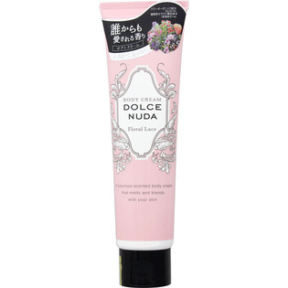

返回列表
产品名称：ドルチェヌーダボディクリームフローラルレース

バイソン ドルチェヌーダボディクリームフローラルレース １５０ｇ
メーカー バイソン
JANコード 4901525006040
商品の特徴
誰からも愛される香り
とろけて、もっちり。
- 成分・分量
- 水、グリセリン、ＤＰＧ、ミネラルオイル、ステアリルアルコール、ステアリン酸グリセリル、パルミチン酸エチルヘキシル、水添ポリ（Ｃ６－１２オレフィン）、シア脂、エーデルワイスエキス、セイヨウサンザシ果実エキス、アルガニアスピノサ核油、カニナバラ果実油、ローマカミツレ花油、ユズ果実エキス、トリセテス－５リン酸、カルボマー、グリチルレチン酸ステアリル、水酸化Ｎａ、ポリソルベート６０、ジメチコン、ＢＧ、香料、メチルパラベン、プロピルパラベン
- 用法及び用量
- -